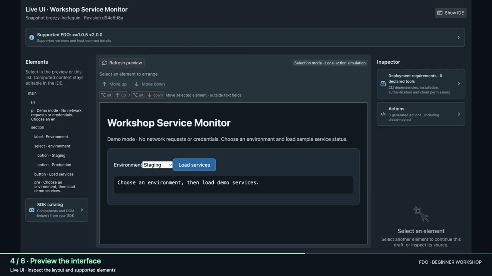

01 / START HERE
Your first FDO plugin
Create a Service monitor from a built-in template. Prepare a signing certificate, explore the workspace, preview with Live UI, run tests, and deploy your plugin locally.
SetupTemplatesTest & deploy
Watch workshop 1 on YouTube
Follow alongTemplate & setup guide